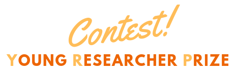

About me
I am a second year PhD student based in Strasbourg, France, and working at Geprovas and Icube. I am under the supervision of Christophe Collet, Nabil Chakfé and Emmanuel Monfrini. I graduated from the French engineering school Télécom SudParis in 2017.
My research interests are artificial intelligence and machine learning techniques both on theoretical and applied aspects. My PhD topic leads me to applications linked with medical imaging and biomaterial studies in the field of vascular surgery.
News
- One paper accepted for oral presentation and another for poster presentation at GRETSI 2019!
- Submit your abstract for the Young Research Prize
of the 2019 ESVB
Congress, up to June 30th 2019.

Teaching
During the 2018/2019 academic year, I teach the master students of Télécom Physique Strasbourg. The subjects I am involved in are :
- Basics of signal processing
- 2D signal processing for images
- Digital Communications
Publications
:x